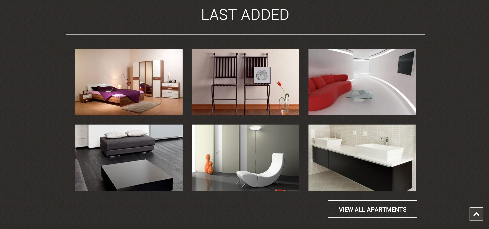
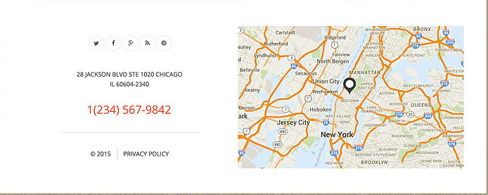

HEADER

Target Audience
Designed for any one looking for a the perfect rental apartment targeting mostly towards females 18-25 years old.Women control a high percentage of purchases and decision making in the consumer world.
Client Goals and User Needs
The goal for this site is to help people find the right apartment.It fixates a on searching apartments for rent and in-turn will generate revenue for that rental property.
Design Critique
The first thing you'll notice about this would be the House-icon. "Perfect Rent" is the first thing you'll read because it's bigger and surrounds the house icon which makes it pop out and give emphasis.The designer executed a flawless stand out design by focusing the contrast and opacity of the font. Notice how "Perfect" has more contrast and "Rent" has a slight opacity reduction to it this alone is a simple but effective way of giving this header a stand out look. The designer obviously wanted this to be the focal point and I would say he/she succeeded.
View ComponentNEWS
Target Audience
A business or person in need of a website span across the world in all age and class brackets these days. The professional look of this component gives off a compelling look and feel. This appeal helps to focus towards a young and modernized well established person or business. Most startup companies will not have a general understand nor the budget needed to build websites, so the focus will be on established companies that will become long-term clients.
Client Goals and User Needs
The primary objective of this component is to notify the user the latest news about the the company. The focus for the client is to communicate an effective message to the user,at which in-turn reserve a long term client relationship.
Design Critique
This component has a very simplistic look and feel about it. The background is a bright white that gives the emotional feeling of goodness, innocence, purity. The grouping of the featured images give a calming feeling. The color of the blue back to top of page button complements the white background instills trust and comfort. The design also has a carousel effect that will allow the user to click on to see more news and stories past the two that are displayed.
View ComponentFEATURES

Target Audience
Designed for and targeted toward the business minded individual mostly male 30-55.The options provided implies that it is aimed at corporate to higher end individuals.
Client Goals and User Needs
The actions to learn more below the topics indicate that the client's goal is to communicate more information and gain additional interaction. The user on the other hand is getting more bang for their buck.I would certainly expect a growing business relationship based on the this.
Design Critique
The bright white,often associated with purity, cleanliness, and virtue is adding contrast to the gold buttons and the black typography and icons
View ComponentGALLERY
Target Audience
Designed for renting a leasing apartments. Once again this gallery is show casing elegant and modern style home furnishings. This particular gallery/ site is targeting mostly female of the ages 19-35 years old.With the view all apartments CTA at the bottom prompts the user to more interactivity and persuasion to lock in on a sale.
Client Goals and User Needs
The goal for this site is to give the user a look at the furnished apartments for lease and rent. The client goals are to deftly make money as well as give the user a welcome home feeling.
Design Critique
The layout of the dark brown/black color with a slight pattern associated with power, elegance, and formality. The images contrast to stand out and capture your attention and communicate to the modern generation. The images have several matching colors of the background color, but also have some reds and whites to give it a little more intriguing look and feel.The user can focus on the images and content from the utilization of rule-of-thirds.Ui elements the up arrow give the user a quick way to return to the navigation at the top.The use of 'Roboto', sans-serif font also communicates to a modern generation.
View ComponentNews Letter CTA
Target Audience
This subscribe CTA is from a design website in which is targeted towards mostly males approximately between the ages 20-35 and females 20-35.Adding a subscribe CTA is a great way to keep the target audience informed and to keep coming back.
Client Goals and User Needs
The goal for the client is to get the user to subscribe via email versus the user clicks because he/she would like to be informed of updates and latest offers and news.
Design Critique
The use of the classic bright white again makes the border of the field stand out. The red line about the title is what catches the eye and draws the users attention downward . The field also has a tooltip that initiates if you do not fill in a valid email. The use of a bright orange color speaks to the user to be pressed and move on.
View ComponentCONTACT
Target Audience
This contact component is for anyone who wants to get directly in touch with the company. The site is targeting a web industry specific audience - young to middle age, male and female. Internet savvy people, an average consumer and professionals alike. I would go further to say it could be targeting almost anyone.
Client Goals and User Needs
Name,E-mail,Phone number,organization,and message is provided by the client to encourage the user to make contact
Design Critique
The layout of the contact form is decorated with an image that is placed in the background. I personally do think this is really necessary to make this contact form stand out because of the fields color of solid white with out any border to emphasize them.However, a border around the fields would look much better. The send button is hard pink color that is easily distinguishable for the user.
View ComponentFOOTER
Target Audience
Designed for a corporation. This footer is designed and intended to target business minded audience male and female.
Client Goals and User Needs
Accurate social networking links and any needed copyright information with the logo and company name.
Design Critique
Minimal design keeps the focus mostly on the logo and social networking links. The logo and company name is the primary element in this footer design, taking up the whole left of the page.A brilliant bright aqua color to add contrast to the company name logo and social icons.
View ComponentProfile
Target Audience
Designed for women to assist in women's health, Gynecologic Specialties, Obstetric Specialties,and maternal fetal medicine. The target audience is aimed at women aged at approximately 25-35 years of age. Women coming to this site would benefit with the gift of life.
Client Goals and User Needs
The clients goal is to provide medical attention to women who are with child and provide the patients with extensive medical attention during the trimesters. Users landing to this site would benefit greatly.Every aspect of the information is welcoming and gives the user a unique experience while visiting and inquiring about the service it provides.
Design Critique
The first part of this design I notice is the typography . Green is a very down-to-earth color. It can represent new beginnings and growth. It also signifies renewal and abundance. Alternatively, green can also represent envy or jealousy, and a lack of experience.However The use of the color Green with the typography is that of a new begging being it is focused mainly towards women who are with child.The 3 columns are filled with images of kindness and hope.The background of the lab coat with the stethoscope gives the three images a pop out feeling and makes them stand out more to draw the user in towards the information that is provided.
View ComponentMEET THE TEAM
Target Audience
Designed for any one looking for a great company or business. The target audience for this would target younger males and females ages 25-35. This component gives us a look at the team that would be assisting the user and help them meet the needs in business. There is also a very clear understanding of who does what name ,title,and position.This would deftly come in handy when the user is needing to get in touch of a particular person for any particular problem.
Client Goals and User Needs
The goal for the client is to make the user aware of who they will be dealing with when it comes to problems. This component identifies who will be working at this particular business. This design component lets the user get to know the individuals on a sort of personal level.
Design Critique
I am not a huge fan of how small the photographs are on this particular component. I do however love the fact that the designer used a very bright orange color to make the images stand out . Second the typography for me is a little bit smaller and hard to read. This could potentially drive a user away if they do not have great vision. Descriptions and captions need to be very identifiable and easy to read. Lastly, I would make the title a tad bit larger "Work Team". Again, needs to be easy to identify.
View ComponentGENERAL SERVICES

Target Audience
Designed for any one who is interested in fresh fruits and vegetables grown organically. This could target male and female alike who are interested in heating healthy and want t know what farm it is grown at.
Client Goals and User Needs
Client goals are met through the design giving the user colorful icons and descriptions of the services they provide to there customers.This works well with users looking for convenient information.
Design Critique
I love this design because of the earthy tan color background and the colorful icons that is displayed. The icons are a perfect size and are displayed perfectly on this component and catches he users attention.I am a big fan of the round icon and think there is no limit to having a round icon and incorporating it into a great design.
View Component